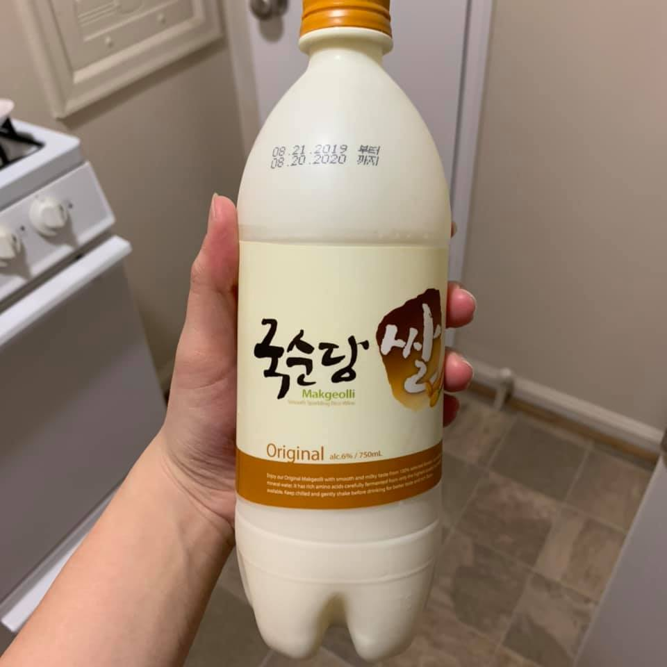

Below is a FB post I wrote on 12/17. I thought it didn't sound too cringy so decided to post it here as well. After all, it's the end of 2019.
아래는 12/17에 쓴 페이스북 포스트인데, 그렇게 오글거리지 않아서 여기에도 올리기로 결정했다. 2019년의 끝이기도 하니까...
---
좋은 소식 - 최근에 Human-Computer Interaction 분야에서 최고 학회인 CHI에 1저자 논문이 conditionally accept 되었다ㅎㅎ 여름과 가을 학기가 정말 힘들었고 서브밋 전날에 울기도 했는데 (그날 다독여준 우석 오빠와 Finda에게 정말 감사하다) 좋은 결과가 나서 기분이 너무 좋고 홀가분하다. 몇 개월 동안 나만을 위해서가 아니라 누군가를 위해서 잘 해내야 한다는 스트레스가 만만치 않았던 것 같고 여러 일이 있었다.
근데 설령 논문이 떨어졌다고 해도...그래도 괜찮았을거다. 이제는 진짜 장기전이라는 걸 체감한 것 같다. 실패의 시간들 속에서 항상 이 생각을 다짐해야겠다는 생각이 든다 (실제로 다른 논문은 올해 두 번 리젝되었다).
사진은 합격 결과 듣고 혼자 마신 막걸리!
Our paper "Synthesized Social Signals: Computationally-Derived Social Signals from Account Histories" got conditionally accepted to CHI, a top tier conference in Human-Computer Interaction! It was relieving because this year's summer and fall were rough -- I remember crying on the day right before the submission (thank you Woosuk and Finda for the support that day).
That said, even if the paper got rejected, I know I would be fine in the end. I think I am becoming more accustomed to the fact it's a marathon and not a sprint. At least that's what I'm thinking a lot these days.
It's also what I want to remind myself in the time of rejections -- my other paper got rejected twice this year.
Picture - Korean alcohol I drank alone at home after hearing about the acceptance. 🙂
Will give an update once I have a camera-ready version!

12/31/2019